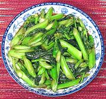

|
Yu Choy Stir-fryChina | ||||
| Serves: Effort: Sched: DoAhead: |
4 side ** 20 min Prep |
A nice, simple stir fry with good flavor, also made with Shanghai bok choy. This recipe lends itself to many variations. Use as a side dish or as a light vegetarian main dish. See also Chicken with Yu Choy and Pork with Yu Choy. | |||
|
1 ----- 1 1 1 1 1/2 ----- 1 |
# --- T T T T t --- T |
Yu Choy (1) -- Sauce Soy Sauce Oyster Sauce Stock Rice Wine (2) Salt -------- Oil |
Prep (10 min)
|